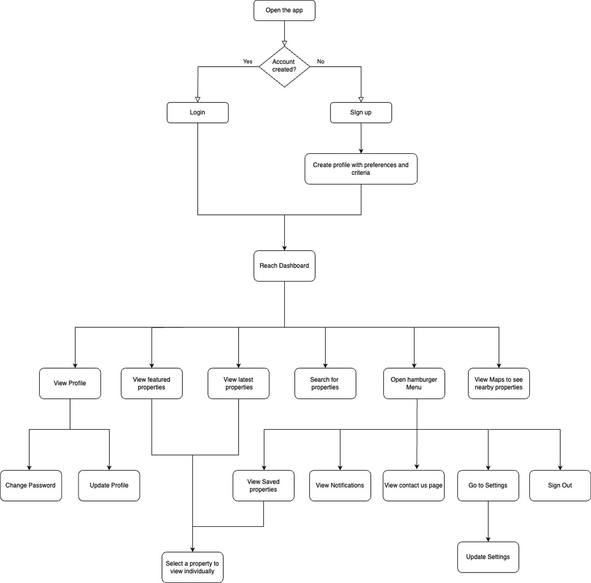

Awashub is a real estate app for buying, selling, and renting properties. It offers advanced search filters, agent connections, and a seamless user experience across devices.
Industry
PropTech | B2C
Role
UI/UX Designer
Team
Solo
Duration
8 weeks
Approach
User-centered design
Tools
Figma, Figjam, Slack
Awashub is a real estate platform designed to make property searching easy and stress-free. With a clean, responsive design and smart filters, users can quickly find, compare, and save properties. The app also makes it simple to connect with agents or property owners all in one place.
During my research, I realized that many property search platforms were frustrating to use. Listings were often cluttered, filters didn’t work properly, and mobile experiences were especially poor. Users also struggled to keep track of their favorite properties or easily get in touch with agents. I wanted to solve these problems by designing an experience that feels intuitive, organized, and helpful making the property search process smoother and less stressful.
How might we make property searching easier and more organized for users?
I conducted user interviews and online surveys with people actively searching for properties. The goal was to understand their challenges, needs, and behaviors while using existing real estate platforms. I also reviewed competitor apps to identify common usability gaps.
What I learned:
Proposed Features
After carefully analyzing user feedback and research insights, I identified focused design goals to directly address the main challenges users face when searching for properties. These goals guided the feature development for Awashub, ensuring a smooth, intuitive, and efficient experience that meets users’ real needs.
Here is the user flow I created to map out how users move through the Awashub app. It shows the key steps from searching for properties to connecting with agents, helping me design a smoother and more organized experience.
I started with low-fidelity wireframes to establish the basic layout and functionality of the app. This approach helped me focus on user flow and core interactions, allowing for quick adjustments to enhance the user experience before moving into more detailed design work.
I created a modern, minimalist mood board for the app to capture a clean and user-focused aesthetic. The goal was to design an interface that feels elegant and intuitive, allowing users to navigate smoothly without distraction. This style keeps the app user-friendly and visually uncluttered, enhancing the experience of browsing properties effortlessly.
Font Family: Montserrat
For the desktop version, I used the extra screen space to display more content without clutter. I organized sections in a clean grid layout, added more spacing for readability, and made navigation easier to access. This helped create a smooth and visually balanced experience for desktop users.
Next, I plan to refine the visual design to make it more polished and consistent. I will work on creating high-fidelity prototypes to showcase interactions and ensure the user journey feels smooth. I also want to expand the designs for more breakpoints and conduct usability testing to gather feedback and make further improvements based on real user insights.